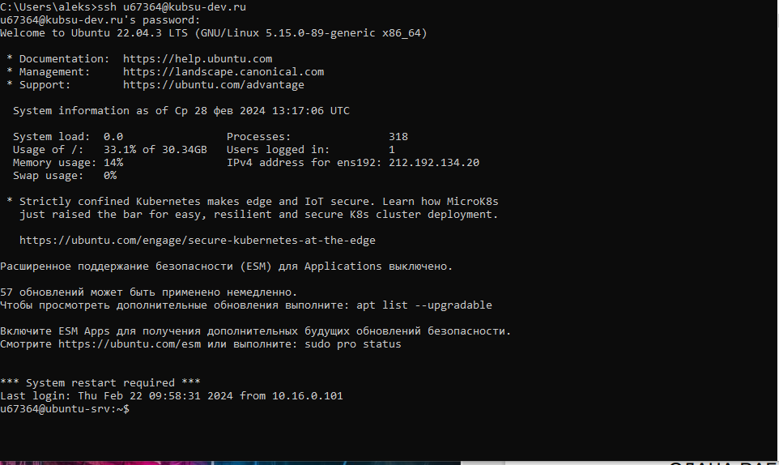
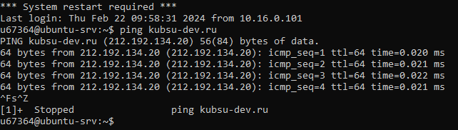
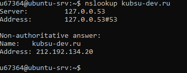
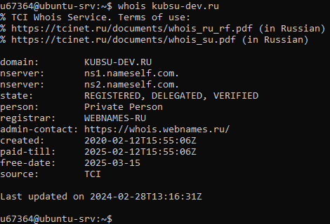
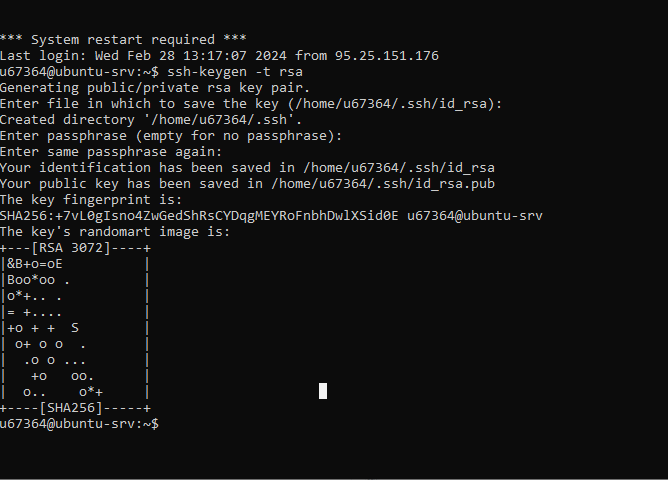
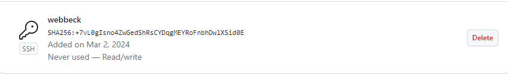

1 скриншот
Получение логин и пароль доступа к учебному серверу
kubsu-dev.ru. Подключиться к нему по SSH

2 cкриншот
С помощью команды ping на учебном сервере узнать IP-адрес веб-сервера
kubsu.ru

3 скриншот
С помощью команды nslookup узнать A-записи и MX-записи домена kubsu.ru и
kubsu-dev.ru

4 скриншот
С помощью команды whois узнать дату регистрации домена

5 скриншот
с помощью команды ssh-keygen -t rsa сгенерировал ssh-ключ и поместил его в каталог с адресом (/home/u67364/.ssh/id_rsa)
Затем получил ключи с помощью команды cat ~/.ssh/id_rsa.pub

6 скриншот
Добваляем ssh-ключ на github

6 скриншот
Подключился через FileZilla и скопировал файлы с сервера на свой компьютер